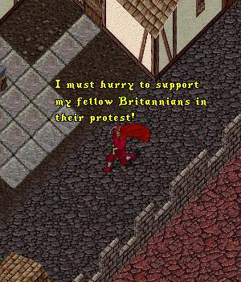
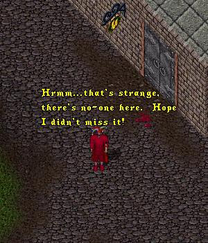
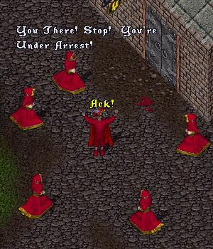
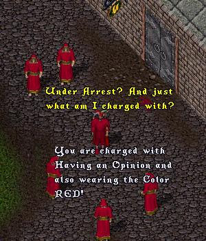
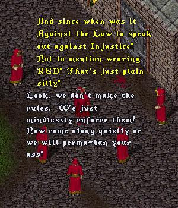
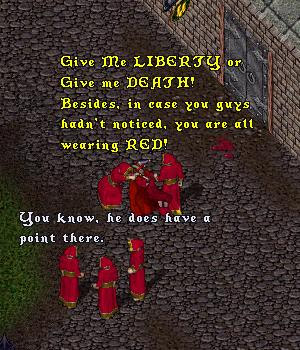
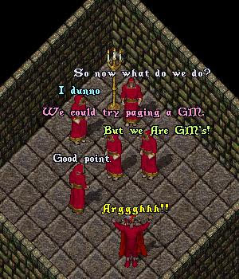

Episode 111: If You're Red, You're Dead - For those of you who haven't heard, last weekend the Lake Superior players staged a large demonstration on Atlantic to protest problems with the LS Servers. OSI's response was mass bannings so here's a little 'toon about the event. When you've finished here make sure and check out the Enquirer for another look at the issue.
As this episode opens we find ImaNewbie
dressed in his red protest outfit racing to
join his fellow citizens in the mass protest
at the Britain bank on Atlantic.






